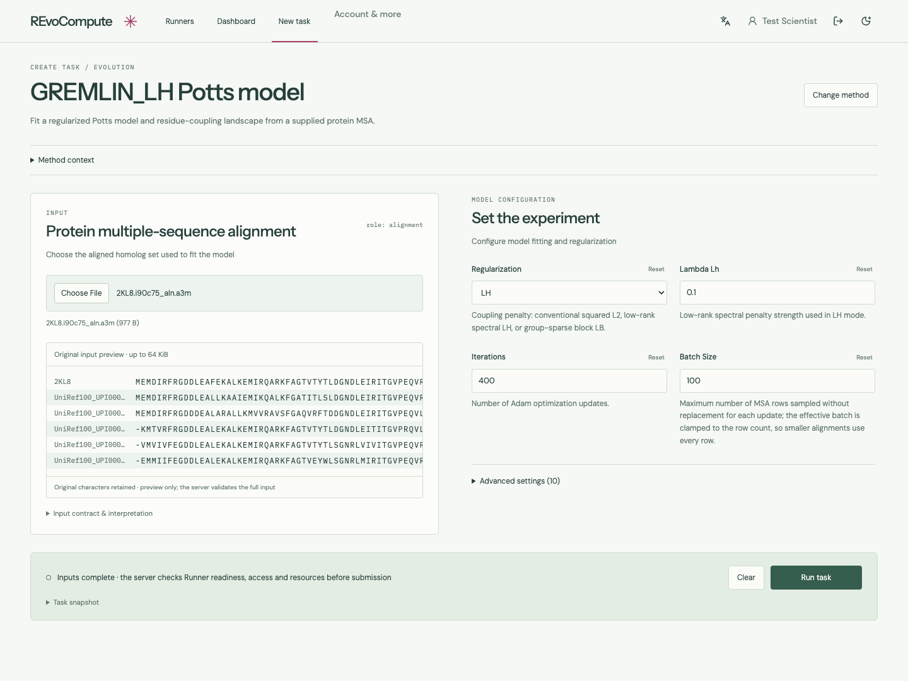
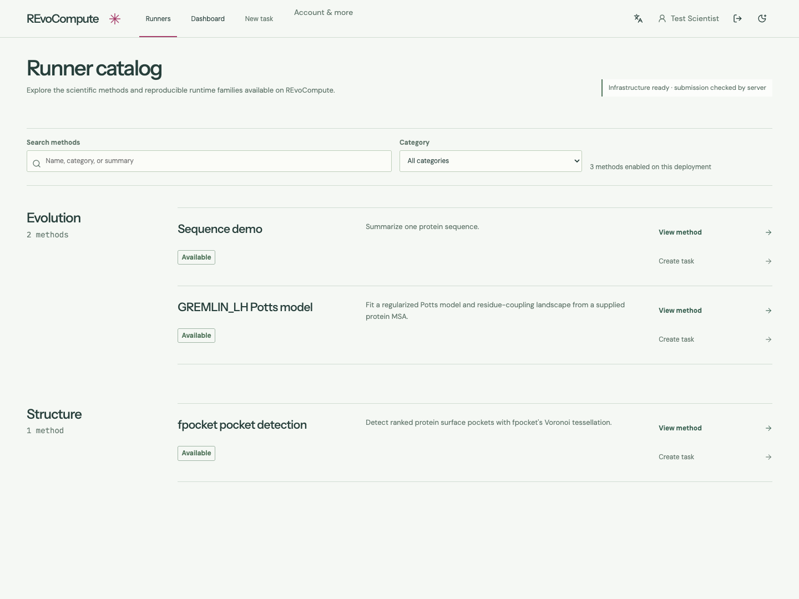
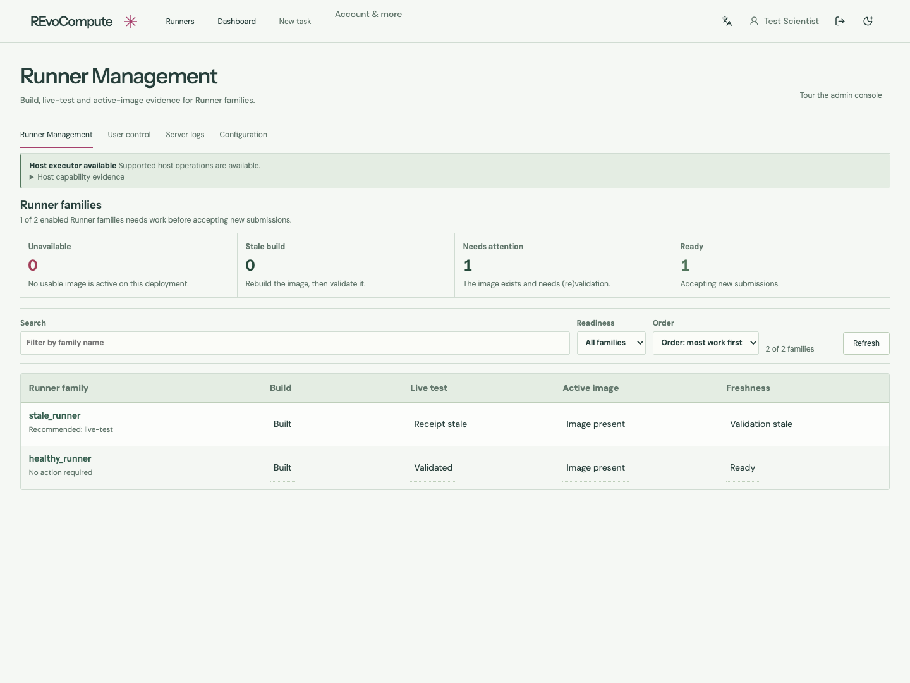
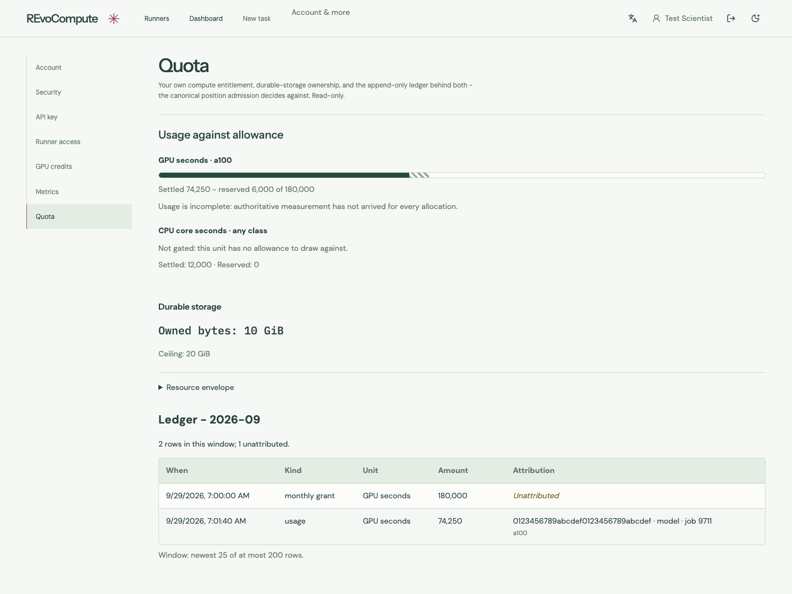
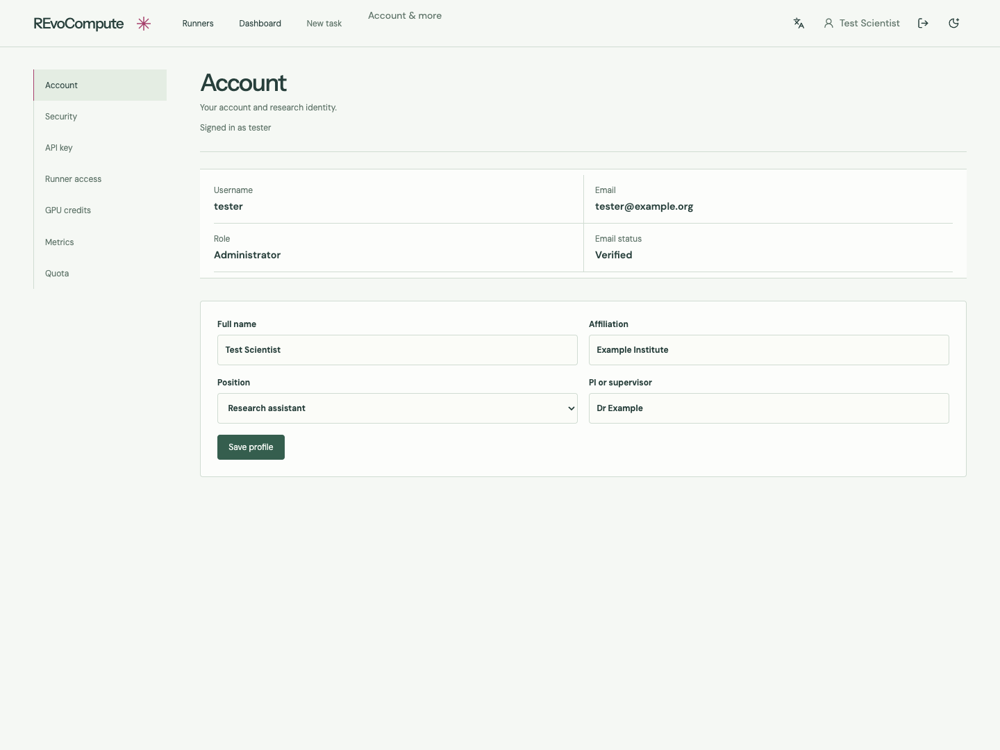

Dashboard
1440 × 1080 · real Flask API, synthetic owned Tasks (four vs eight in prototype)
Create Task
1440 × 1080 · same authentic 2KL8 alignment; original bytes retained
Approved original prototype Reconstructed production frontend
Reconstructed production frontend
fpocket
1440 × 1050 · same retained 1SUO run, selected Pocket 1, full structure
GREMLIN
1440 × 1080 · same 2KL8 seed-0 replay, raw couplings, strongest pair selected
Runner Catalog
Derived application surface · production frontend · synthetic API evidence · 1440 × 1080. No dedicated approved prototype exists.

Runner Management
Derived application surface · production frontend · synthetic API evidence · 1440 × 1080. No dedicated approved prototype exists.

Quota
Derived application surface · production frontend · synthetic API evidence · 1440 × 1080. No dedicated approved prototype exists.

Profile
Derived application surface · production frontend · synthetic API evidence · 1440 × 1080. No dedicated approved prototype exists.
